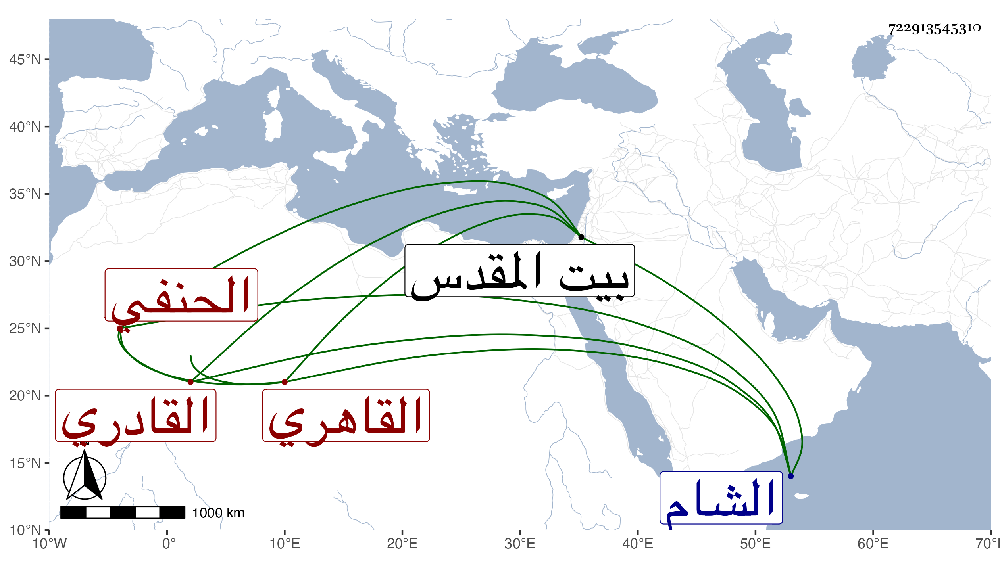

0902Sakhawi.DawLamic.ITO20230111-ara1.EIS1600.722913545310
Biography ID: 722913545310
1313
يونس بن فارس الشرف أبو البر القادري القاهري الحنفي ولد فيما قرأته بخطه سنة ثلاث وثمانمائة وصحب العز الحراني القادري وتسلك به وبغيره من المشايخ في الطريق ولذا انتسب قادريا ، وطلب الحديث وقتا قبلنا ، وسمع بقراءتي أيضا وكتب اليسير من الأجزاء ونحوها وطبق وضبط في الدارقطني بمجلس شيخنا وارتحل إلى الشام فأقام بها أياما وأخذ عن ابن ناصر الدين وكتب عنه متبايناته وكذا قرأ في بيت المقدس على ابن المصري سنن ابن ماجه في آخرين ، وخطه جيد ولكنه لم يتأهل مع دين وتواضع وعفاف ومحبة للصالحين ، وقد حج كثيرا ماشيا وراكبا ولا أستبعد أن يكون سمع هناك وحدث باليسير وكتب في الأجايز وتنزل في صوفية الأشرفية برسباي أول ما فتحت ، ورأيت بخطه إجازة لبعض من عرض عليه الكنز من المدنيين في سنة سبع وخمسين ، قال فيها أنه حضر معظمه على السراج قاري الهداية بقراءته له على العلاء السيرامي وساق سنده . مات في أواخر صفر سنة ست وستين ، ونعم الرجل كان رحمه الله .
